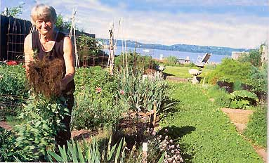
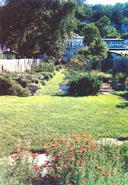
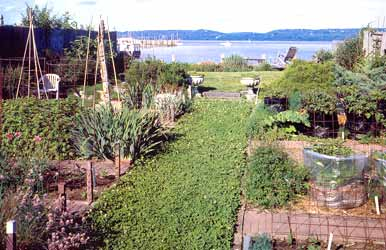
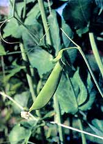
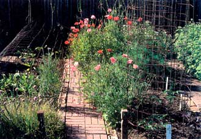
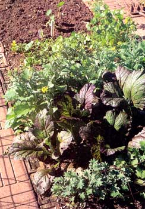
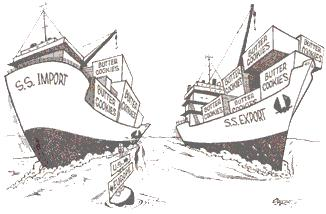
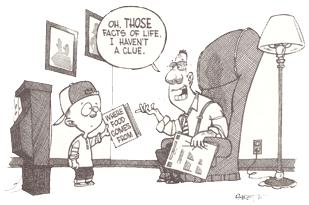

Photos by Mick Hales
A young neighbor who watered and harvested my garden for a few days last summer left a message on my answering machine while I was away. She had read my new book, This Organic Life, which tells the story of my quarter-century effort to eat locally in downstate New York.
"I was just thinking," she said. "This may be the only time in history when humans have had complete strangers - strangers who are badly treated or ignored - growing and preparing all our food."
One could nitpick her facts, but she has the right idea. Not even a century ago, most of us had a pretty good idea where our food came from. Now - if the eaters I speak to are typical - most people can't identify the origin of anything they ate yesterday.
And, as my young friend's comment suggests, if we knew where our food was coming from, if we knew who and what was involved in getting it to our tables, we would doubtless be appalled at the evils wrought on our behalf - not only to strangers, but to the planet and its other living beings. We might even be scared. Here are a few reasons why we should be:
• The contamination of crops - even organic crops - with genetically modified organisms, whose long term effect on our ecosystem is unknown and whose effects on human health are untested;
• The horrors and cruelties of the hog factories with their lagoons of waste;
• Meat and poultry plants with their speeded-up disassembly lines threatening not only the lives and limbs of the people who work them, but the health of those who eat the flesh they produce;
• Our growing dependence on perishable foods shipped to us from poor countries everywhere;
• And most critically, the hemorrhaging of farmers and farmland from our national landscape. (The latest figures show that for every farmer under 35 there are five farmers over 65.) All these portend a future that seems anything but secure where our food is concerned.
In losing farmers we are losing the capacity to feed ourselves. A couple of years ago, economist Steven Blank wrote a book with the ominous title The End of Agriculture in the American Portfolio (Greenwood Publishing Group). Blank believes agriculture may move overseas because investing in it is just not profitable.
I'll say. In 1999 production costs rose 20 percent, and prices for commodities fell an average of 7 percent. On average, farmers and ranchers now get 7 percent to 8 percent of food system profit. Who'd invest in that?
As for what that means in the field, consider the potato. In his brilliantly devastating book Fast Food Nation (Houghton Mifflin), Eric Schlosser explains that a few companies control most of the potato market. Fast food purveyors now buy frozen fries for about 30 cents a pound, reheat them in oil and sell them (with added grease) for about $6 a pound. On every $1.50 order of fries a potato farmer makes 2 cents.
The result was reported in The New York Times last summer. Under the headline "Misery is Abundant for Potato Farmers," the story pointed out that it costs a potato farmer about $5 to produce a 100 pound sack of potatoes, for which the processors pay him less than $1. What's a farmer to do? The subhead said it: "Bumper Crops Turned into Fertilizer." Many farmers plowed their crops under. When that happened in the Great Depression, it was all over the papers. Now it hardly makes the news.
In the Northeast, where I live, the loss of farmers is catastrophic: Cranberry growers have been told to cut production because a surplus has driven prices too low.
New York State dairyman and orchardists are going out of business every day. Two years ago, I visited an upstate dairy where the farmer had earned more for growing one acre of gourmet potatoes than from a year of dairying. The next year, lots of upstate dairymen grew gourmet potatoes, prices dropped and that little stream of hope dried up.
And it wasn't apples my landscape-architect friend went to buy at the orchard we visited one day. He was buying mature apple trees for an instant antique orchard, part of the multimillion-dollar landscaping of a new McMansion. The trees the farmer sold that afternoon netted him more than a month of apple selling.
It isn't just New York growers who are in trouble either. Apple producers everywhere now compete directly with China's cheap labor. The world's most populous nation, with little land per capita for food production, has set out to become apple producer for the world, although growing apples for export utilizes precious land on which China should grow food for her people.
Faced with such an ominously changing food landscape, what can we do?
Almost 30 years ago, I went into the field I nutrition because I was concerned about what was happening to the U.S. food supply as the world faced a food and population crisis. The products appearing on our grocery shelves seemed increasingly frivolous in a world full of hungry people. Could we feed everyone, I wondered, without devastating the environment? Wasn't the array of filly cereals and juice drinks a shameful distraction from the real issues? My search for answers to those questions led me to the - conclusion that our food supply was wasteful and unsustainable, and the methods we were exporting to increase food production around the world were likely to end up making things worse.
So 23 years ago, I published a book, The Feeding Web, about our role in the global food system. Its message was that we in this rich country can pull food from wherever on the planet it's produced, so it looks as if we can always have everything. The trouble is that "everything" often is being produced and brought to us at a true cost that is hor rendous: wasted and irreplaceable groundwater and fossil energy, eroded top soils, polluted soil, water and air, and so on.
What could be done? Obviously the problems I had identified were invisible to U.S. eaters, most of whom had no idea how, where or by whom their food was grown. As a teacher, I knew how hard it would be to make food production relevant to eaters who had long ago learned from the abundance of the supermarkets and the blandishments of advertisers that they could expect to eat anything any time.
How, I wondered, could U.S. shoppers be made to understand the need to protect the people and places that grew their food? How could they be taught to care about farmers in California, let alone in Ethiopia or Guatemala? I concluded people had to be helped to unlearn the anything, anywhere, anytime lessons about food by being taught to eat from closer to home. Unless the demand end of the food supply could be changed, we rich consumers would continue to pull in foods from everywhere, no matter how hungry the rest of the world became, and no matter how much damage our demand was doing to our mutual biosphere.
Relocalizing the food system in this way seemed almost impossible to achieve, but worth trying, given the scary alternatives. In the early 1980s, I began to suggest to my colleagues in nutrition that we needed to change the content, not just the methods, of nutrition education and move people toward more local, seasonal diets. This radical idea that we should move away from the overflowing global supermarket, this marvel of modernity - was judged both impractical and silly given the convenience and abundance of the supermarket.
I disagreed with the silly part, but as for impractical, I wasn't sure. I had begun to talk about local eating with no clear idea of what a New York diet would taste like when the ground was frozen. I decided I had to walk my talk and move toward local, seasonal eating. Because farmer's markets were few and far between, my husband and I set out to do it in the only way it could then be done, by producing it ourselves.
I think I said we intended to "grow our own food," a formulation that seems remarkably naive in retrospect, since we only grew fruits and vegetables. But since the things people worry about most when you talk about eating locally are fruits and vegetables ("What would I do for salad in January?") the effort seemed worthwhile.
My goal was not to prove that everyone could grow her own if she wanted to. My goal was to create a model of what local farmers could make available if we set out to create a market for what they could produce. I was trying to model - and I still am - the sort of eating choices I thought we all needed to work toward if we were to have a sustainable food system and world. I wanted to demonstrate that responsible eating could be done without real pain. And 25 years after I decided to live by my convictions, I know that it can be. I demonstrate the tastiness of local eating every time I serve a splendid local meal in the dead of winter.
Having made my point, I obviously would help farmers more by buying their food than by growing my own, assuming I could find a local year-round source. But now I'm totally addicted to growing the vegetables I eat and eating only the vegetables I grow. To assure myself that this obsession is rational, I use my own farming crises to teach me lessons about what farmers go through to feed us all. So I want to conclude this manifesto with a couple of stories from my book to illustrate two of the lessons I've learned in 30-odd years. The first of those lessons is that if we eat locally, weather will matter a lot more.
Two summers ago, we had a drought in my region, and it got so dry that rats chomped into every one of my tomatoes as they ripened. I live on the Hudson, a tidal river with a wedge of salt flowing upriver under the surface. When there's no rain going into the river to dilute it, it gets increasingly salty. Well into my rat crisis I learned from the mayor, a former fisherman, that the rats couldn't handle the salt. They were eating my tomatoes for liquid. So I called Roger, the village's exterminator, who is paid to keep the riverfront free of rats. He scouts the community garden out of generosity, and, since I'm right next door, fits me in, too. In the midst of my despair, I shared his diagnosis and my own frustration by e-mail with the community gardeners:
By restricting myself to eating vegetables I grow, I'm constantly reminded that food is the generous outcome of a collaboration between our species and the rest of nature, not simply another product of industrial civilization.
Fellow Gardeners: Just thought you'd like to know that I haven't harvested a ripe tomato yet. The rats have gotten them all. Roger came, announced that there were no rat burrows on either my property or in the community garden, so he couldn't put poison down the den. He said he would put out bait stations, but then he said, "Joan, vegetables and fruits are rats' favorite food. They're going to stand here. " He looked back and forth between the bait station and the tomatoes. "And they're going to say `Chicken or sirloin? Chicken or sirloin?'and they're going to choose sirloin."
So if you find chomped tomatoes, don't, DON'T throw them on the ground, but remove them to the compost pails. Pick up and compost all dropped tomatoes. Surround your plants with netting if you can. Stake them high; get a little rat doll and stick pins in it, and hope that Roger's bait is more attractive than he thinks!
And if you ever wonder why rats will outlast us on the planet, just re member they don't contribute to global warming by driving to the store in a humvee, and they love fruits and vegetables.
-Cheers, Joan
Some of this was probably hysterically bad advice, since if the tomatoes were left ly ing around the rats might have finished off the ones they had already started instead of chomping into fresh ones every night.
The rat crisis ended with a flood. Six and a half inches of rain in a few hours put my entire yard underwater. This killed off the tomato plants and a number of other weather-sensitive crops. Although the sweet potatoes - a mainstay of my winter diet - looked fine, I learned when I dug them later in the year that the water had cracked them open and a third of the crop had rotted, leaving the others looking like true Frankenfoods.
This was not the first time I had lost a crop to the weather. Two years earlier we had the wettest year in history, and I lost two-thirds of the onion crop (100 pounds the year before) and at least a third of the potatoes. I found myself deeply depressed about the loss of the crops. What was bothering me? I could buy potatoes and onions when I needed them. Then it dawned on me: I was suffering sympathetic angst.
It really didn't matter if my crops failed. I have a market within walking distance and can afford even their high prices. But the same could not be said for my fellow farmers, the ones who feed you and provide for me when my own crops fail. They have no divine dispensation that protects their crops from the devastation mine experienced. If I was having trouble salvaging drowned onions that year, the Upstate onion growers surely would be sharing my problem - and they were. That year's crop was a disaster. As for the potato farmers, a close cousin of the potato blight organism that set off the 19th-century Irish famine had turned up in the Northeast a year or two earlier; the wet weather that damaged my potatoes encouraged the blight to spread.
Of course, no sensible farmer would have chosen my flood-prone land, and they're certainly better at what we both do. But they're also vulnerable to the weather. When I bought peaches at our local farmer's market in September, I mentioned to the grower that all my tomatoes had simply collapsed. He said, "Mine, too." In the narcissism of relief I said, "I'm so glad." I caught myself, apologized and said, "I thought it was me." He smiled for the first time since we began dealing with each other weeks earlier and said, "No. When fullgrown plants are suddenly hit with stress, they just collapse." I realized with relief that it wasn't my soil, my skills or wilt from the manure I brought in. It was the weather.
By restricting myself to eating the vegetables I grow, I'm constantly reminded that food is the generous outcome of a collaboration between our species and the rest of nature, not simply another product of industrial civilization. The lesson I learned from the realization that crops sometimes fail wasn't that regions can't be relatively self-reliant. They can be. It's just that if we eat locally, we sometimes have to adjust our choices and our appetites to what Nature decides to provide that year.
This leads directly to the second major lesson I've learned: We'll need to change our eating patterns - a lot - if we want to live by the seasons. Because I restrict myself to what I grow, I recognize that I narrow my winter choices more than most people would need to, but some hard truths would affect everyone. Fresh tomatoes are only available in my home July through December - when the last ones have ripened from green in my cold cellar.
Asparagus comes for one month in the spring almost anywhere north of the equator. And in winter I never have a lettuce salad unless I've been far-sighted enough to plant in the cold frame. It's encouraging to know that inventive farmers like Eliot Coleman are teaching other farmers to grow lovely winter greens in unheated greenhouses in chilly places like Maine, which means local limitations may be eased by inventiveness. But in some parts of the country, we're going to have to adjust to several months of more root vegetables than most of us are used to.
Seasonality, alas, is not what people know or have been taught. In this taste-blind country, we've been taught to think that a meal is a meal is a meal whether it's June or December. One example of this is the widespread conviction that the salad of iceberg lettuce and tomato is an essential food group year-round; another is the notion, encouraged by the California produce marketers, that five-a-day, even in December, means a banana, orange, bunch of grapes and a lettuce-and-tomato salad, rather than, for example, an Indian stew containing five winter vegetables in a single dish.
Some groups of consumers who support farmers directly through Community Supported Agriculture (CSA) are learning lessons we all need to learn about weather and changing seasonal menus. Faced with unfamiliar early spring and late fall vegetables, people learn to change their diets with the seasons. But everyone can't join a CSA, and there are lots of people who need educating - food writers, among others, who all too often feature recipes that have nothing to do with what's seasonally available.
I am moved and encouraged by the thousands of efforts around the country to connect schools and farms, chefs and farms, and consumers and farms. I chair the board of a group in New York City, called Just Food, which has helped start 19 CSAs. Using the new census figures and estimates of the number of people our CSAs feed, I calculated our CSA farmers are feeding one out of every 2,000 New Yorkers. That's a fabulous beginning. But small.
The overwhelming majority of people still choose their foods mindlessly from the global supermarket the rest of the world provides for us, choosing for price, taste and variety (with an emphasis on variety and price, good taste being represented by what they're used to), heavily dosed with sugar and salt.
It won't be enough to convince those people to shop at farmers' markets in the summer, helpful as those are. We need people to shop mindfully year-round, seeking out seasonal local produce even in the winter.
There's much work to do. Those of us working toward relocalization need to talk seriously about just what we mean by local. How local? Grains and beans might reasonably be shipped, for reasons I explain in my book. And I see no reason why people who live in colder climates can't sometimes have oranges, though a daily glass of fresh orange juice north of here oranges grow is prob ably self-indulgent. Spices which are light and of high value should be shared around the world. But, overall, produce is about 90 percent water: We are warming the planet shipping cold water around the world It costs 435 fossil fuel calories to fly a 5 calorie strawberry from California to New York. Yet a strawberry researcher from Ithaca told me that we could have a much longer run of local strawberries in the East if there were rewards for raising them, and they would be grown here if California produce didn't arrive so cheaply in our markets. Many food trade patterns are irrational.
Herman Daly noted we in the United States both import end export Danish butter cookies. He suggested we might better exchange recipes.
My food-system radicalization occurred when I found Haiti, the poorest country in the hemisphere, exports meat to us. Another insanity is that we export what we import. My favorite economist, Herman Daly, noted we in the United States both import and export Danish butter cookies. He suggested we might better exchange recipes.
Once, after I spoke about the problems of global agriculture, someone came up and said, "Do you really imagine there will be a time when our cities will be surrounded by farms producing much of their food?" I don't know. I can't imagine how we're going to get to such a place from where we are now, but I know what's out there now isn't going to last. The planet is already showing signs of a terminal illness. The simple fact is a global food system isn't sustainable; we might, just might, be able to make local ones that are. As someone concerned with food, I can't imagine any other way to live.
At the beginning of the 21st century, I'm no longer alone in my concern about the future of the food system; the idea that we might chose diets more responsible to the places where we live is no longer viewed as silly and impractical. Around the country are thousands of organized efforts to move the nation toward more seasonal local eating. What all are trying to teach to everyone from preschoolers to homemakers, from chefs to retirees, are these lessons: Get to know your farmer, because someone out there is growing you . Wherever you are, eat what your own landscape can provide.
I have lately learned to admire the novelist Arundhati Roy, who is using the fame she earned from her writing to wage a public campaign against nuclear arms and large dams in her native India. This is what she said: "When you go to Europe or America for the first time, you arrive in a city where you don't see any mud, and everything looks really nice, all the cars and the steel and the glass. But I look at a car and I think, `This came from earth and water and forest.' How? I don't know. But you need to know - you need to know what the connection is; who paid the price of what."
That's what I would say about the foods we eat. We need to remember that somehow they came "from earth and water and forest." We need to know how, and who paid the price. We need to know what the connections are, and then we need to use our power as eaters to demand delicious food produced by local food systems that are economically sound, ecologically sustainable and socially just.
A leading advocate for sustainable diets based on seasonal, local produce, Gussow is a long-time organic gardener and former chair of the Nutrition Education Program at Columbia University. Her most recent book is This Organic Life: Confessions of a Suburban Homesteader. Her column "Home Food" will be featured regularly in Mother Earth News.
|
 Author Joan Gussow, photographed in her garden in New York, tells why and how we must move toward local, seasonal, sustainable diets. |
 Gussow has turned her small piece of land in downstate New York into her main food source. |
 Gussow's yard/garden is an inspiring departure from the standard rectangle of grass. |
|
 A perky `Sugar Snap' pea stands up to be counted |
 Volunteer poppies seem to crop up in a different location each summer in Gussow's garden. |
 The mustard plants with their regal purple eaves and emerald undergarments are also enthusiastic volunteers in Gussow's garden. |
|
 |
 |
|